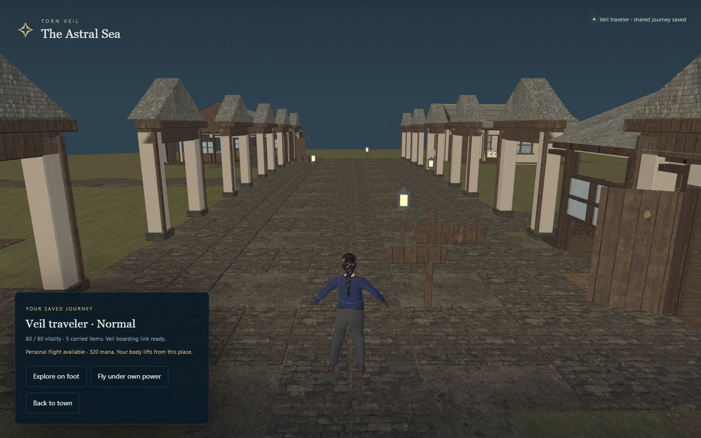
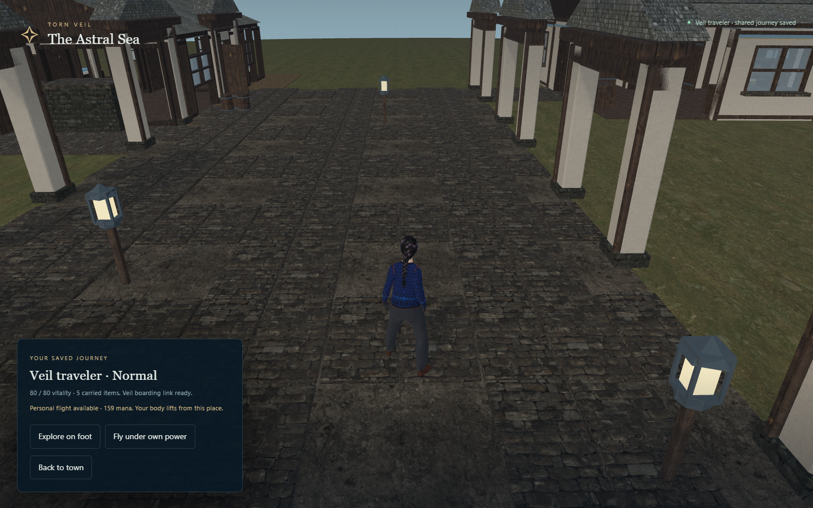

Browser pass complete; separate checkpoint restart evidence is required.
Both runs use 1440×900 headed Chrome and normal presentation quality. World positions, camera framing, orbit, lighting and asset residency may differ; compare the recorded states before interpreting timing differences. No image manipulation: full captures and native screenshot clips only. All poses and viewpoints use ordinary input. This is an isolated capability fixture, not earned progression.
Read exact checks and observations · 17 checks recorded · 0 raw browser console/runtime errors · 0 unclassified or unrecovered HTTP failures · 0 recovered save-busy responses


Each timing sample contains120 animation frames. A requested animation name alone is not evidence of its source. Verified source IDs, actual source clips, destination rigs and hashes appear below.
| Capture | Frame p50 / p95 ms | Draws | Source / actual clip | Rig | Flight pose |
|---|---|---|---|---|---|
| 01-town-preview | 20.7 / 41.6 | 631 | quaternius-ual-standard / Idle_Loop | wren | ground |
| 02-restored-reentry | 20.7 / 27.8 | 631 | quaternius-ual-standard / Idle_Loop | wren | ground |
{"source":"quaternius-ual-standard","file":"motion/ual-standard.glb","sourceClip":"Idle_Loop","retargetLook":"wren","sha256":"69591853d817488edaa8fd9bf8fc1d821eaeaf789f8627b3cd23b41c4ed67997","license":"CC0-1.0"}One machine, one generated system and one endowed character. The gallery does not certify every asset, body, seed, ability capacity or collision configuration. Optional private motion packs may be unavailable; their HTTP results and truthful fallbacks are recorded separately. Camera-frustum asset IDs do not prove unoccluded pixels. Lighting and mesh/rig observations still require visual review.